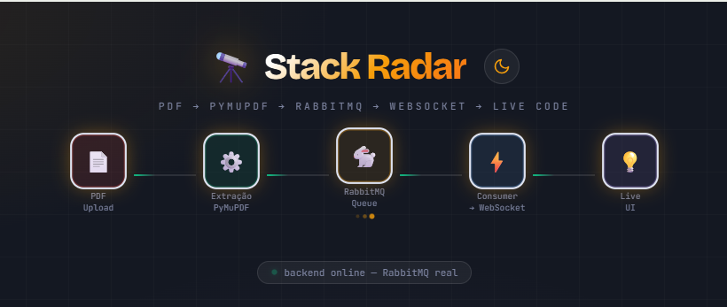
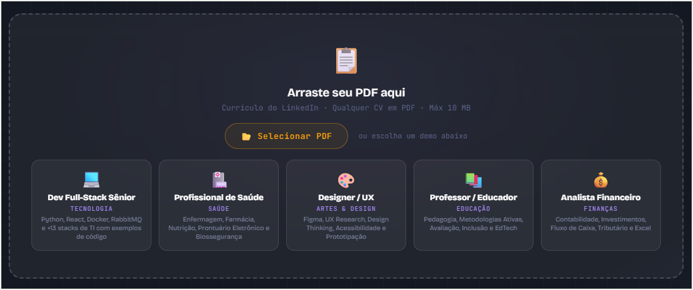
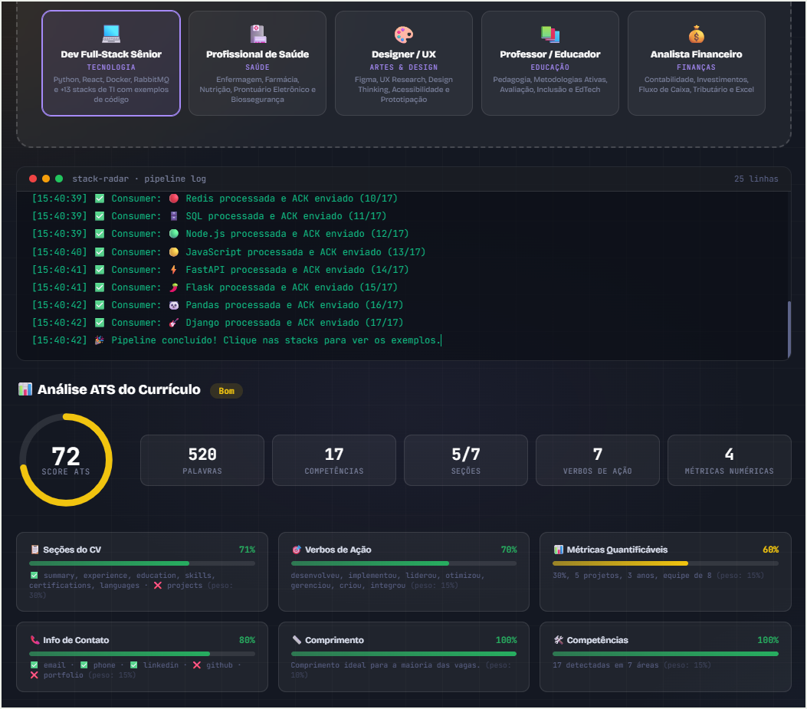
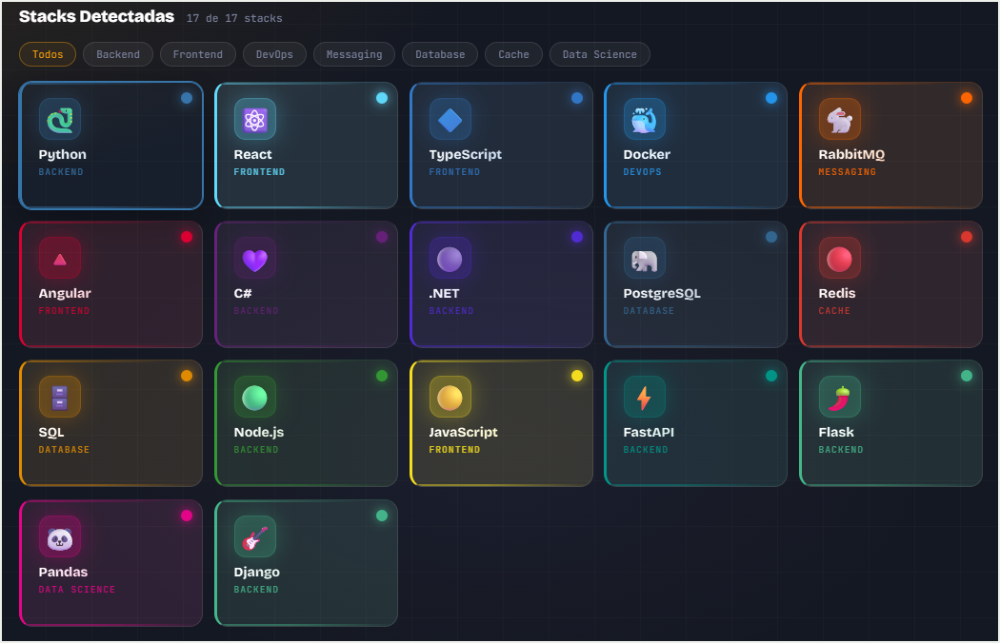
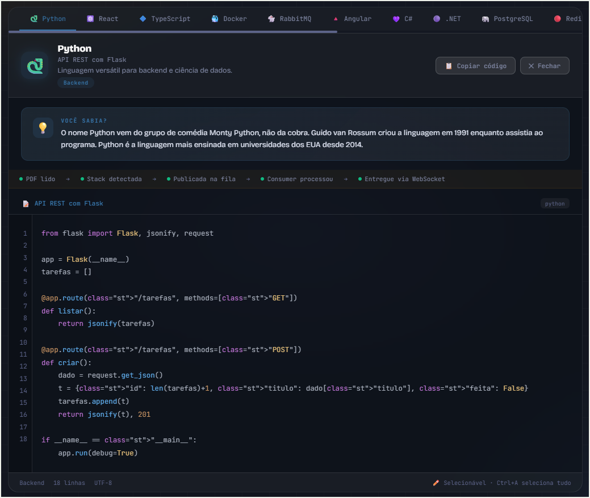
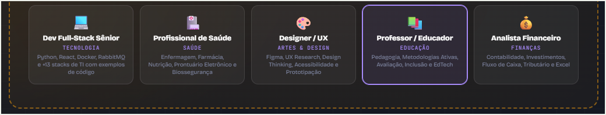
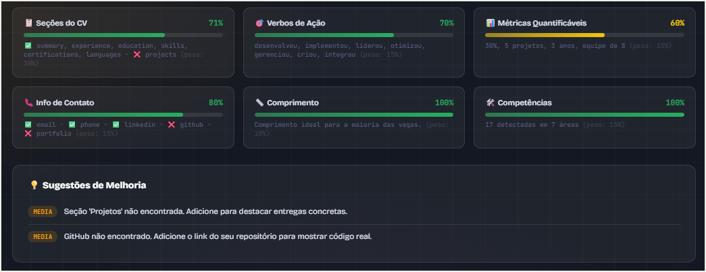
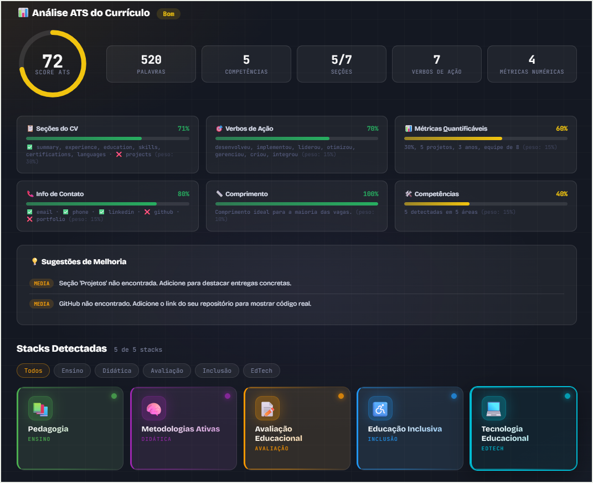
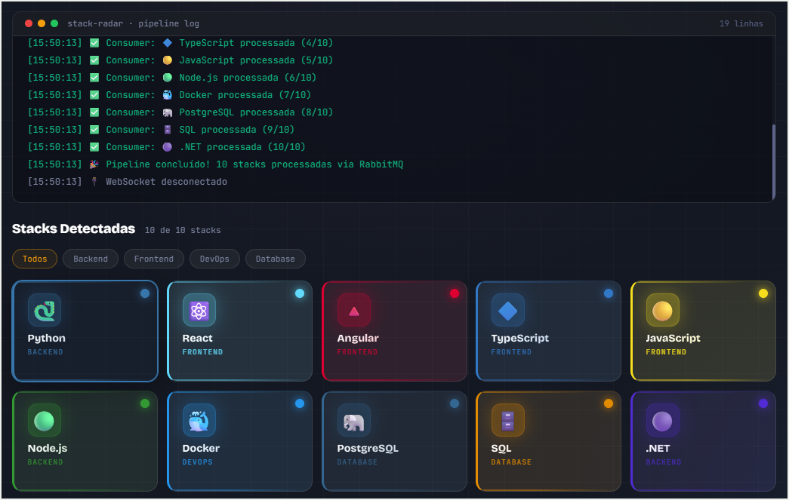

Analisa currículos em PDF e detecta 228 competências profissionais em 8 áreas — com score ATS, sugestões de melhoria e pipeline de mensageria em tempo real.
Screenshots capturadas diretamente do aplicativo em funcionamento — pipeline real, ATS dashboard e demos interativos.









Cada competência detectada vira uma mensagem AMQP publicada no RabbitMQ com delivery_mode=2 (persistente). O consumer processa uma por vez (prefetch_count=1) com ACK manual — e entrega via WebSocket ao browser em tempo real.
O currículo é pontuado como um ATS de verdade: seções (30%), verbos de ação (15%), métricas quantificáveis (15%), dados de contato (15%), extensão (10%), competências (15%). Score de 0 a 100 com barra animada e sugestões de melhoria priorizadas.
De TI (127 stacks) a Saúde, Educação, Design, Marketing, Finanças, Engenharia e Logística. O currículo de um enfermeiro ou professor é tão bem analisado quanto o de um desenvolvedor full stack.
Clique em qualquer stack para ver um exemplo de código real com syntax highlight. Cada tecnologia também exibe uma curiosidade histórica ou técnica — conteúdo educacional integrado à análise profissional.
Não precisa ter um PDF para testar. Cada demo simula o pipeline completo com stacks reais da área profissional.
228 competências organizadas em taxonomia JSON externa, com sinônimos em PT-BR e EN.
Producer/consumer em threads separadas com prefetch_count=1 e ACK manual. Mensagens persistentes (durable=True) sobrevivem a restarts — padrão AMQP real.
Consumer RabbitMQ envia mensagens para o loop asyncio do FastAPI via run_coroutine_threadsafe. O browser recebe cada stack processada sem polling — conexão bidirecional real.
Taxonomia JSON externa com aliases, sinônimos PT-BR/EN, categorias e subcategorias. Currículos de saúde, educação e finanças detectados com a mesma precisão que TI.
Scoring engine que avalia seções (30%), verbos de ação (15%), métricas (15%), contato (15%), extensão (10%) e competências (15%). Mapeia seções em PT-BR e EN — incluindo PDFs do LinkedIn.
Cada perfil demo (TI, Saúde, Design, Educação, Finanças) gera stacks com código/conteúdo real e simula o pipeline completo — incluindo ATS scoring — sem requisitar o servidor.
Dockerfile com usuário não-root, healthcheck no RabbitMQ, railway.json configurado. 10 camadas de segurança: CORS, headers, validação XSS, UUID para sessões.